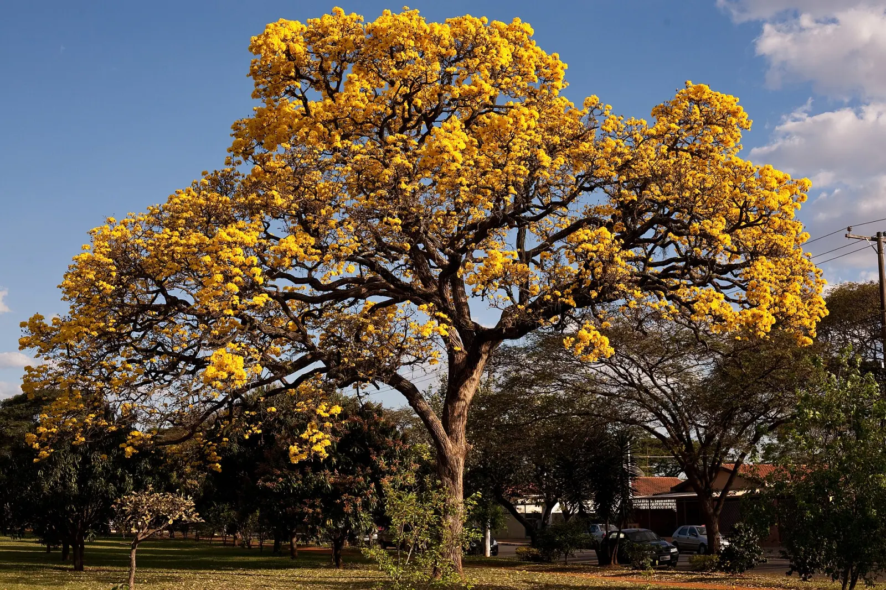
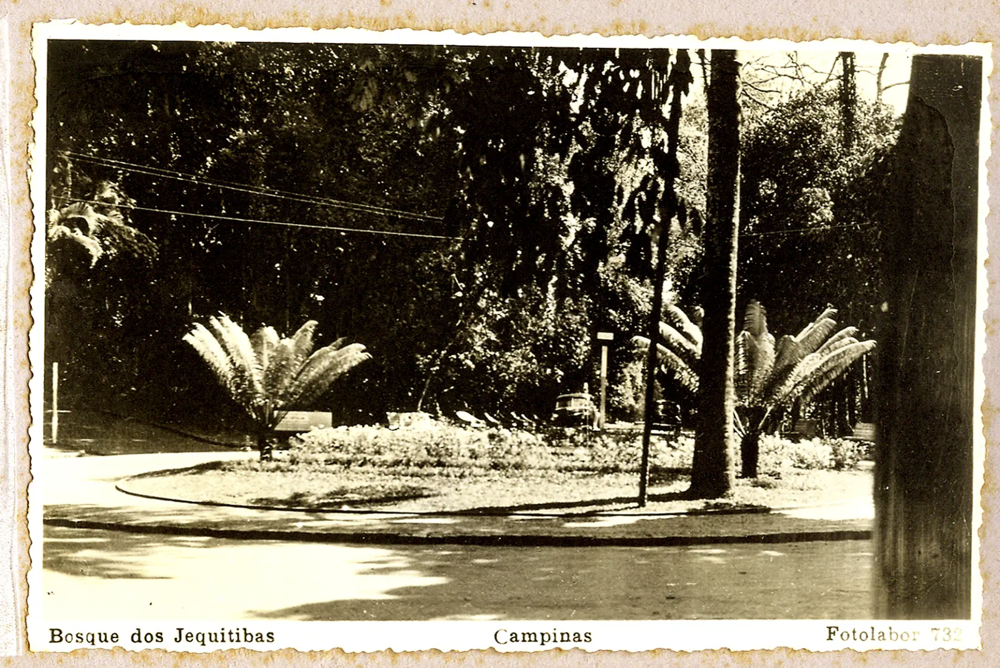

Calma, pontualidade e paciência
Como acompanho
Sou Ana, acompanho pessoas idosas há seis anos. Busco em casa, vou junto à consulta, ao banco ou ao mercado, espero o tempo que for preciso e trago de volta. Combino tudo antes com a família e respeito o ritmo de quem vai comigo.
Experiência e qualificações
Curso de cuidadora de idosos, 160 horas, em 2020. Atualização em primeiros socorros em 2025. Carro próprio, que já entra no valor da hora.

Orçamento com Ana
Diga quantas horas a tarefa deve levar, sem limite. Ana atende a partir de 2 horas, e a hora fica mais barata a partir de 4.
Mínimo de 2 horas, sem limite máximo. Digite o número ou use os botões.
Cada bloco é uma hora a R$ 60,00, valor de Ana a partir de 4 horas.
R$ 240,00
4 horas × R$ 60,00 por hora
Ana atende a partir de 2 horas.
A partir de 4 horas, a hora de Ana cai para R$ 60,00. Você economiza R$ 40,00.
Veículo incluso: Ana busca em casa, leva e traz de volta.
Pedir 4 horas com AnaTarefas
4 itens
Consulta ou exame2 a 4 h
Busca em casa, acompanha na sala de espera e na consulta, se a família quiser, e traz de volta.

Banco ou cartório2 a 3 h
Ajuda com filas, senhas e papéis. Assinaturas e decisões ficam com quem vai ao banco.

Mercado e farmácia1 a 2 h
Carrega as sacolas e segue a lista combinada com a família.

Passeio1 a 3 h
Caminhada na Lagoa do Taquaral ou na praça, no ritmo de quem caminha.
Onde e quando
4 itensCambuíAtende
Saída e volta de casa no bairro.
TaquaralAtende
Saída e volta de casa no bairro.
DisponibilidadeSeg–sex
Das 8h às 18h. Os horários dependem do aceite de cada pedido.
VeículoIncluso
Carro próprio, sem cobrança à parte. Táxi ou aplicativo não são necessários.
Documentos em dia

O que as filhas contam
“Eu estava no trabalho. A Ana levou minha mãe ao exame e esperou até o fim.”
5 de 5 · Beatriz M., filha · 12/10/2026
Resposta de Ana: Obrigada pela confiança, Beatriz. Foi um prazer ir com a sua mãe.
Avaliação vinculada ao atendimento FA-1024.